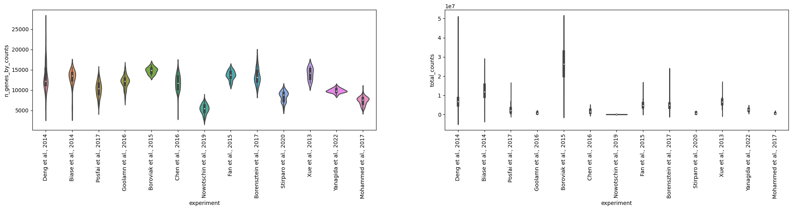

!which pip/projects/dan1/data/Brickman/conda/envs/scvi-1.0.0/bin/pip
Mouse: - Guo et al., 2010: qPCR on steroids, complicated, skipping - maybe for prediction, could be interesting) - Guo et al., 2014: Bisulfite-Seq (skipping) - ~~Ohnishi et al., 2014: Microarray (used in ccmnetplus for validation) *~~
!which pip/projects/dan1/data/Brickman/conda/envs/scvi-1.0.0/bin/pipimport anndata
import pandas as pd
import scanpy as sc
import pandas as pd
import seaborn as sns
def load_experiment(filename: str, GEO: str, left_on: str = 'sample', right_on='SRX'):
adata = sc.read(filename)
metadata = pd.read_csv(f"../pipeline/fetchngs/{GEO}_metadata.csv")
# sometimes we have duplicates because the ID is not unique
adata.obs = pd.merge(adata.obs, metadata, left_on=left_on, right_on=right_on)\
.drop_duplicates(left_on)\
.set_index(left_on)
adata.obs['ct_orig'] = adata.obs['sample_title']
return adata%run ../scripts/helpers.py/projects/dan1/data/Brickman/conda/envs/scvi-1.0.0/lib/python3.10/site-packages/scvi/_settings.py:63: UserWarning: Since v1.0.0, scvi-tools no longer uses a random seed by default. Run `scvi.settings.seed = 0` to reproduce results from previous versions.
self.seed = seed
/projects/dan1/data/Brickman/conda/envs/scvi-1.0.0/lib/python3.10/site-packages/scvi/_settings.py:70: UserWarning: Setting `dl_pin_memory_gpu_training` is deprecated in v1.0 and will be removed in v1.1. Please pass in `pin_memory` to the data loaders instead.
self.dl_pin_memory_gpu_training = (
/projects/dan1/data/Brickman/conda/envs/scvi-1.0.0/lib/python3.10/site-packages/tqdm/auto.py:21: TqdmWarning: IProgress not found. Please update jupyter and ipywidgets. See https://ipywidgets.readthedocs.io/en/stable/user_install.html
from .autonotebook import tqdm as notebook_tqdmdef normalize_smartseq(adata: sc.AnnData, gene_len: pd.DataFrame) -> sc.AnnData:
print("SMART-SEQ: Normalization")
common_genes = adata.var_names.intersection(gene_len.index)
print(f"SMART-SEQ: Common genes {common_genes.shape[0]}")
lengths = gene_len.loc[common_genes, "length"].values
normalized = adata[:, common_genes].copy()
normalized.X = normalized.X / lengths * np.median(lengths)
normalized.X = np.rint(normalized.X)
return normalized# pip install gtftools
# !gtftools \
# -l ../data/external/Mus_musculus_GRCm38_102_gene_length.txt \
# /scratch/Brickman/references/mus_musculus/ensembl/GRCm38_102/Mus_musculus.GRCm38.102.gtf
genes_length = pd.read_table("../data/external/Mus_musculus_GRCm38_102_gene_length.txt").set_index('gene')
genes_length['length'] = genes_length['mean']
genes_length| mean | median | longest_isoform | merged | length | |
|---|---|---|---|---|---|
| gene | |||||
| ENSMUSG00000102693 | 1070 | 1070 | 1070 | 1070 | 1070 |
| ENSMUSG00000064842 | 110 | 110 | 110 | 110 | 110 |
| ENSMUSG00000051951 | 3592 | 3634 | 4153 | 6094 | 3592 |
| ENSMUSG00000102851 | 480 | 480 | 480 | 480 | 480 |
| ENSMUSG00000103377 | 2819 | 2819 | 2819 | 2819 | 2819 |
| ... | ... | ... | ... | ... | ... |
| ENSMUSG00000117740 | 331 | 331 | 331 | 331 | 331 |
| ENSMUSG00000117782 | 1570 | 1570 | 1570 | 1570 | 1570 |
| ENSMUSG00000117951 | 256 | 256 | 256 | 256 | 256 |
| ENSMUSG00000095993 | 168 | 168 | 168 | 168 | 168 |
| ENSMUSG00000118197 | 243 | 243 | 243 | 243 | 243 |
55364 rows × 5 columns
| Dataset | Technology | Download | Notes |
|---|---|---|---|
| Deng et al., 2014 | SMART-seq 1/2 | GSE45719 | Done |
| Biase et al., 2014 | SMART-seq | GSE57249 | Done |
| Posfai et al., 2017 | SMART-seq | GSE84892 | Done |
| Goolamn et al., 2016 | SMART-seq2 | E-MTAB-3321 | Done |
| Boroviak et al., 2015 | SMART-seq2 | Sup Table S1 | Done |
| Chen et al., 2016 | SMART-seq2 | GSE74155 | Done |
| Nowotschin et al., 2019 | 10X v2 | Portal | Done |
| Fan et al., 2015 | SUPeR-seq | GSE53386 | Done |
| Borensztein et al., 2017 | qRT-PCR | GSE80810 | Done |
| Stirparo et al., 2020 | SMART-seq2 | GSE159030 | Done |
| Xue et al., 2013 | qRT-PCR | GSE44183 | Done |
| Yanagida et al., 2022 | SMART-seq2 | GSE148462 | Done |
| Mohammed et al., 2017 | SMART-seq2 | GSE100597 | Done |
nf-core_tower.sh \
Deng_et_al_2014 \
nextflow run nf-core/fetchngs \
-r 1.10.0 \
--input /projects/dan1/data/Brickman/projects/proks-salehin-et-al-2023/pipeline/fetchngs/GSE45719.txt
nf-core_tower.sh Deng_et_al_ALIGNED nextflow run brickmanlab/scrnaseq \
-r feature/smartseq \
-c /projects/dan1/data/Brickman/projects/proks-salehin-et-al-2023/pipeline/smartseq.config \
--protocol smartseq \
--aligner star \
--fasta /scratch/Brickman/references/mus_musculus/ensembl/GRCm38_102/Mus_musculus.GRCm38.dna_sm.primary_assembly.fa \
--gtf /scratch/Brickman/references/mus_musculus/ensembl/GRCm38_102/Mus_musculus.GRCm38.102.gtf \
--star_index /scratch/Brickman/references/mus_musculus/ensembl/GRCm38_102/star_2.7.10a \
--input /scratch/Brickman/pipelines/Deng_et_al_2014/results/samplesheet/samplesheet.csvdeng_metadata = pd.read_table("https://ftp.ncbi.nlm.nih.gov/geo/series/GSE45nnn/GSE45719/matrix/GSE45719_series_matrix.txt.gz",
skiprows=30, index_col=0).Tdeng_metadata['ct'] = deng_metadata['!Sample_source_name_ch1'].values
deng_metadata['SRX'] = deng_metadata[['!Sample_relation']].agg(' '.join, axis=1).str.extract(r'(SRX[0-9]{6})')
deng_metadata = deng_metadata.reset_index()legend = {
'16-cell stage blastomere': '16C',
'2-cell stage blastomere': '2C',
'4-cell stage blastomere': '4C',
'8-cell stage blastomere': '8C',
'Early 2-cell stage blastomere (31-32h post-fertilization)': '2C',
'Early blastocyst cell (86-88h post-fertilization)': 'Blastocyst',
'Late 2-cell stage blastomere (46-48h post-fertilization)': '2C',
'Late blastocyst cell (100-102h post-fertilization)': 'Blastocyst',
'Liver': 'Liver',
'Liver cell': 'Liver',
'Mid 2-cell stage blastomere (34-40h post-fertilization)': '2C',
'Mid blastocyst cell (92-94h post-fertilization)': 'Blastocyst',
'Zygote': 'Zygote',
'fibroblast (primary culture from tail)': 'Fibroblast'
}
for old_name, new_name in legend.items():
deng_metadata.loc[deng_metadata.ct == old_name, 'ct'] = new_name
deng_metadata.ct = deng_metadata.ct.astype('category')
deng_metadata = deng_metadata.query('ct not in ["Liver", "Blastocyst", "Fibroblast"]').copy()deng_metadata['index'].to_csv("../pipeline/fetchngs/GSE45719.txt", index=None, header=None)
deng_metadata.set_index('SRX').to_csv("../pipeline/fetchngs/GSE45719_metadata.csv")deng = load_experiment(
"../data/external/aligned/mouse/Deng_et_al_ALIGNED/results/star/mtx_conversions/combined_matrix.h5ad",
GEO="GSE45719"
)deng.obs['experiment'] = "Deng et al., 2014"
deng.obs['technology'] = 'SMART-seq'
deng.obs.loc[deng.obs.sample_alias.isin([f'GSM12780{i:02d}' for i in range(9, 45)]), 'technology'] = 'SMART-seq2'
deng.obs['batch'] = "DENG_1"
deng.obs.loc[deng.obs.technology == 'SMART-seq2', 'batch'] = "DENG_2"
deng.obs = deng.obs[['batch', 'experiment', 'technology', 'ct', 'ct_orig']]deng = normalize_smartseq(deng, genes_length)SMART-SEQ: Normalization
SMART-SEQ: Common genes 55364nf-core_tower.sh \
Biase_et_al \
nextflow run nf-core/fetchngs \
-r 1.10.0 \
--input /projects/dan1/data/Brickman/projects/proks-salehin-et-al-2023/pipeline/fetchngs/GSE57249.txt
nf-core_tower.sh Biase_et_al nextflow run brickmanlab/scrnaseq \
-r feature/smartseq \
-c /projects/dan1/data/Brickman/projects/proks-salehin-et-al-2023/pipeline/smartseq.config \
--input /scratch/Brickman/pipelines/Biase_et_al/results/samplesheet/samplesheet.csvbiase_metadata = pd.concat([
pd.read_table("https://ftp.ncbi.nlm.nih.gov/geo/series/GSE57nnn/GSE57249/matrix/GSE57249-GPL13112_series_matrix.txt.gz",
skiprows=33, index_col=0).T.reset_index().set_index('!Sample_geo_accession'),
pd.read_table("https://ftp.ncbi.nlm.nih.gov/geo/series/GSE57nnn/GSE57249/matrix/GSE57249-GPL17021_series_matrix.txt.gz",
skiprows=33, index_col=0).T.reset_index().set_index('!Sample_geo_accession')
])biase_metadata['ct'] = biase_metadata['index'].values
biase_metadata['SRX'] = biase_metadata[['!Sample_relation']].agg(' '.join, axis=1).str.extract(r'(SRX[0-9]{6})')
biase_metadata = biase_metadata.reset_index()legend = {
'Zygote': 'Zygote',
'Two-cell': '2C',
'Four-cell': '4C',
'Inner cell mass': 'E3.5-ICM',
'Trophectoderm': 'E3.5-TE'
}
for old_name, new_name in legend.items():
biase_metadata.loc[biase_metadata.ct.str.startswith(old_name), 'ct'] = new_name
biase_metadata.ct = biase_metadata.ct.astype('category')biase_metadata['!Sample_geo_accession'].to_csv("../pipeline/fetchngs/GSE57249.txt", index=None, header=None)
biase_metadata.set_index('SRX').to_csv("../pipeline/fetchngs/GSE57249_metadata.csv")biase = load_experiment(
"../data/external/aligned/mouse/Biase_et_al/results/star/mtx_conversions/combined_matrix.h5ad",
GEO="GSE57249")biase.obs['batch'] = "BIASE_1"
biase.obs['experiment'] = "Biase et al., 2014"
biase.obs['technology'] = "SMART-seq2"
biase.obs = biase.obs[['batch', 'experiment', 'technology', 'ct', 'ct_orig']]biase = normalize_smartseq(biase, genes_length)SMART-SEQ: Normalization
SMART-SEQ: Common genes 55364biaseAnnData object with n_obs × n_vars = 56 × 55364
obs: 'batch', 'experiment', 'technology', 'ct', 'ct_orig'
var: 'gene_symbol'nf-core_tower.sh \
Posfai_et_al \
nextflow run nf-core/fetchngs \
-r 1.10.0 \
--input /projects/dan1/data/Brickman/projects/proks-salehin-et-al-2023/pipeline/fetchngs/GSE84892.txt
nf-core_tower.sh Posfai_et_al nextflow run brickmanlab/scrnaseq \
-r feature/smartseq \
-c /projects/dan1/data/Brickman/projects/proks-salehin-et-al-2023/pipeline/smartseq.config \
--input /scratch/Brickman/pipelines/Posfai_et_al/results/samplesheet/samplesheet.csvposfai_metadata = pd.read_table("https://ftp.ncbi.nlm.nih.gov/geo/series/GSE84nnn/GSE84892/matrix/GSE84892_series_matrix.txt.gz",
skiprows=31, index_col=0).Tposfai_metadata['SRX'] = posfai_metadata[['!Sample_relation']].agg(' '.join, axis=1).str.extract(r'(SRX[0-9]{6})')
posfai_metadata = posfai_metadata.reset_index()legend = {
'16': '16C-',
'32': 'E3.25-',
'64': 'E3.5-'
}posfai_metadata['ct'] = 'UNKNOWN'
for old_name, new_name in legend.items():
posfai_metadata.loc[posfai_metadata.loc[:, '!Sample_characteristics_ch1'].iloc[:, 0].str.contains(old_name), 'ct'] = new_name
posfai_metadata.ct = posfai_metadata.ct + posfai_metadata.loc[:, '!Sample_characteristics_ch1'].iloc[:, 2].str.replace('lineage: ', '')
posfai_metadata = posfai_metadata.query('~ct.str.contains("CO") or ct != "UNKNOWN"').copy()
posfai_metadata.loc[posfai_metadata.ct.str.contains('16C'), 'ct'] = '16C'posfai_metadata['!Sample_geo_accession'].to_csv("../pipeline/fetchngs/GSE84892.txt", index=None, header=None)
posfai_metadata.set_index('SRX').to_csv("../pipeline/fetchngs/GSE84892_metadata.csv")posfai = sc.read("../data/external/aligned/mouse/Posfai_et_al/results/star/mtx_conversions/combined_matrix.h5ad")
posfai = posfai[~posfai.obs.duplicated()].copy()
posfai_metadata = pd.read_csv("../pipeline/fetchngs/GSE84892_metadata.csv")
posfai.obs = pd.merge(posfai.obs, posfai_metadata, left_on="sample_title", right_on="index").set_index('sample_title')
posfai = posfai[posfai.obs.ct != "E3.25-CO"].copy()/projects/dan1/data/Brickman/conda/envs/scvi-1.0.0/lib/python3.10/site-packages/anndata/_core/anndata.py:1830: UserWarning: Observation names are not unique. To make them unique, call `.obs_names_make_unique`.
utils.warn_names_duplicates("obs")posfai.obs['batch'] = "POSFAI_1"
posfai.obs['experiment'] = "Posfai et al., 2017"
posfai.obs['technology'] = "SMART-seq2"
posfai.obs['ct_orig'] = posfai.obs['!Sample_characteristics_ch1']
posfai.obs = posfai.obs[['batch', 'experiment', 'technology', 'ct', 'ct_orig']]posfai = normalize_smartseq(posfai, genes_length)SMART-SEQ: Normalization
SMART-SEQ: Common genes 55364posfaiAnnData object with n_obs × n_vars = 261 × 55364
obs: 'batch', 'experiment', 'technology', 'ct', 'ct_orig'
var: 'gene_symbol'nf-core_tower.sh \
Goolam_et_al \
nextflow run nf-core/fetchngs \
-r 1.10.0 \
--input /projects/dan1/data/Brickman/projects/proks-salehin-et-al-2023/pipeline/fetchngs/E-MTAB-3321.txt
nf-core_tower.sh Goolam_et_al nextflow run brickmanlab/scrnaseq \
-r feature/smartseq \
-c /projects/dan1/data/Brickman/projects/proks-salehin-et-al-2023/pipeline/smartseq.config \
--input /scratch/Brickman/pipelines/Goolam_et_al/results/samplesheet/samplesheet.csvgoolamn_metadata = pd.read_table("https://www.ebi.ac.uk/biostudies/files/E-MTAB-3321/E-MTAB-3321.sdrf.txt")goolamn_metadata['ct'] = goolamn_metadata['Characteristics[developmental stage]'].valueslegend = {
'cleavage 2-cell' : '2C',
'cleavage 4-cell': '4C',
'cleavage 8-cell': '8C',
'cleavage 16-cell': '16C',
'cleavage 32-cell': '32C'
}
for old_name, new_name in legend.items():
goolamn_metadata.loc[goolamn_metadata.ct == old_name, 'ct'] = new_name
goolamn_metadata.ct = goolamn_metadata.ct.astype('category')
goolamn_metadata = goolamn_metadata.query('ct != "32C"').copy()goolamn_metadata['Comment[ENA_RUN]'].to_csv("../pipeline/fetchngs/E-MTAB-3321.txt", index=None, header=None)
goolamn_metadata.set_index('Comment[ENA_RUN]').to_csv("../pipeline/fetchngs/E-MTAB-3321_metadata.csv")goolam = load_experiment(
"../data/external/aligned/mouse/Goolam_et_al/results/star/mtx_conversions/combined_matrix.h5ad",
GEO="E-MTAB-3321", left_on='run_accession', right_on='Comment[ENA_RUN]'
)goolam.obs['batch'] = [f"GOOLAM_{batch}" for batch in goolam.obs["Characteristics[batch]"].values]
goolam.obs['experiment'] = "Goolamn et al., 2016"
goolam.obs['technology'] = "SMART-seq2"
goolam.obs = goolam.obs[['batch', 'experiment', 'technology', 'ct', 'ct_orig']]goolam = normalize_smartseq(goolam, genes_length)SMART-SEQ: Normalization
SMART-SEQ: Common genes 55364goolamAnnData object with n_obs × n_vars = 118 × 55364
obs: 'batch', 'experiment', 'technology', 'ct', 'ct_orig'
var: 'gene_symbol'nf-core_tower.sh \
Boroviak_et_al \
nextflow run nf-core/fetchngs \
-r 1.10.0 \
--input /projects/dan1/data/Brickman/projects/proks-salehin-et-al-2023/pipeline/fetchngs/E-MTAB-29589.txt
nf-core_tower.sh Boroviak_et_al nextflow run brickmanlab/scrnaseq \
-r feature/smartseq \
-c /projects/dan1/data/Brickman/projects/proks-salehin-et-al-2023/pipeline/smartseq.config \
--input /scratch/Brickman/pipelines/Boroviak_et_al/results/samplesheet/samplesheet.csvboroviak_metadata = pd.concat([
pd.read_table("https://ftp.ebi.ac.uk/biostudies/nfs/E-MTAB-/958/E-MTAB-2958/Files/E-MTAB-2958.sdrf.txt"),
pd.read_table("https://ftp.ebi.ac.uk/biostudies/nfs/E-MTAB-/959/E-MTAB-2959/Files/E-MTAB-2959.sdrf.txt")
])boroviak_metadata['ct'] = boroviak_metadata['Extract Name'].valueslegend = {
'E2.5_MOR': '8C',
'E3.5_ICM': 'E3.5-ICM',
'E4.5_PrE': 'E4.5-PrE',
'E4.5_EPI': 'E4.5-EPI',
}
for old_name, new_name in legend.items():
boroviak_metadata.loc[boroviak_metadata.ct.str.startswith(old_name), 'ct'] = new_name
boroviak_metadata = boroviak_metadata.query('ct in ["8C", "E3.5-ICM", "E4.5-EPI", "E4.5-PrE"]').copy()
boroviak_metadata.ct = boroviak_metadata.ct.astype('category')boroviak_metadata['Comment[ENA_RUN]'].to_csv("../pipeline/fetchngs/E-MTAB-29589.txt", index=None, header=None)
boroviak_metadata.set_index('Comment[ENA_RUN]').to_csv("../pipeline/fetchngs/E-MTAB-29589_metadata.csv")boroviak = load_experiment(
"../data/external/aligned/mouse/Boroviak_et_al/results/star/mtx_conversions/combined_matrix.h5ad",
GEO="E-MTAB-29589", left_on='run_accession', right_on='Comment[ENA_RUN]')boroviak.obs['batch'] = "BOROVIAK_1"
boroviak.obs['experiment'] = "Boroviak et al., 2015"
boroviak.obs['technology'] = "SMART-seq2"
boroviak.obs = boroviak.obs[['batch', 'experiment', 'technology', 'ct', 'ct_orig']]boroviak = normalize_smartseq(boroviak, genes_length)SMART-SEQ: Normalization
SMART-SEQ: Common genes 55364boroviakAnnData object with n_obs × n_vars = 12 × 55364
obs: 'batch', 'experiment', 'technology', 'ct', 'ct_orig'
var: 'gene_symbol'nf-core_tower.sh \
Chen_et_al \
nextflow run nf-core/fetchngs \
-r 1.10.0 \
--force_sratools_download \
--input /projects/dan1/data/Brickman/projects/proks-salehin-et-al-2023/pipeline/fetchngs/GSE74155.txt
nf-core_tower.sh Chen_et_al nextflow run brickmanlab/scrnaseq \
-r feature/smartseq \
-c /projects/dan1/data/Brickman/projects/proks-salehin-et-al-2023/pipeline/smartseq.config \
--input /scratch/Brickman/pipelines/Chen_et_al/results/samplesheet/samplesheet.csvchen_metadata = pd.read_table("https://ftp.ncbi.nlm.nih.gov/geo/series/GSE74nnn/GSE74155/matrix/GSE74155_series_matrix.txt.gz",
skiprows=30, index_col=0).Tchen_metadata['ct'] = chen_metadata['!Sample_characteristics_ch1'].iloc[:, 1].values
chen_metadata['SRX'] = chen_metadata[['!Sample_relation']].agg(' '.join, axis=1).str.extract(r'(SRX[0-9]{6})')
chen_metadata = chen_metadata.reset_index()legend = {
'cell type: E3.5 ICM': 'E3.5-ICM',
'cell type: E4.5 Epiblast': 'E4.5-EPI'
}
for old_name, new_name in legend.items():
chen_metadata.loc[chen_metadata.ct.str.startswith(old_name), 'ct'] = new_name
chen_metadata = chen_metadata.query('ct in ["E3.5-ICM", "E4.5-EPI"]').copy()
chen_metadata.ct = chen_metadata.ct.astype('category')chen_metadata['!Sample_geo_accession'].to_csv("../pipeline/fetchngs/GSE74155.txt", index=None, header=None)
chen_metadata.set_index('SRX').to_csv("../pipeline/fetchngs/GSE74155_metadata.csv")chen = load_experiment(
"../data/external/aligned/mouse/Chen_et_al/results/star/mtx_conversions/combined_matrix.h5ad",
GEO="GSE74155", left_on='sample_alias', right_on='ID_REF')chen.obs['batch'] = "CHEN_1"
chen.obs['experiment'] = "Chen et al., 2016"
chen.obs['technology'] = "SMART-seq2"
chen.obs = chen.obs[['batch', 'experiment', 'technology', 'ct', 'ct_orig']]chen = normalize_smartseq(chen, genes_length)SMART-SEQ: Normalization
SMART-SEQ: Common genes 55364chenAnnData object with n_obs × n_vars = 46 × 55364
obs: 'batch', 'experiment', 'technology', 'ct', 'ct_orig'
var: 'gene_symbol'nf-core_tower.sh \
Nowotschin_et_al \
nextflow run nf-core/fetchngs \
-r 1.10.0 \
--force_sratools_download \
--input /projects/dan1/data/Brickman/projects/proks-salehin-et-al-2023/pipeline/fetchngs/GSE123046.txt
wget https://raw.githubusercontent.com/10XGenomics/cellranger/master/lib/python/cellranger/barcodes/737K-august-2016.txt ../pipeline/737K-august-2016.txt && gzip ../pipeline/737K-august-2016.txt
nf-core_tower.sh Nowotschin_et_al nextflow run brickmanlab/scrnaseq \
-r feature/smartseq \
-c /projects/dan1/data/Brickman/projects/proks-salehin-et-al-2023/pipeline/10X.config \
--input /scratch/Brickman/pipelines/Nowotschin_et_al/results/samplesheet/samplesheet.csvnowotschin_metadata = pd.read_table("https://ftp.ncbi.nlm.nih.gov/geo/series/GSE123nnn/GSE123046/matrix/GSE123046_series_matrix.txt.gz",
skiprows=41, index_col=0).Tnowotschin_metadata['ct'] = nowotschin_metadata.index
nowotschin_metadata['SRX'] = nowotschin_metadata[['!Sample_relation']].agg(' '.join, axis=1).str.extract(r'(SRX[0-9]{6})')
nowotschin_metadata = nowotschin_metadata.reset_index()nowotschin_metadata = nowotschin_metadata[nowotschin_metadata.ct.str.startswith(("E3", "E4"))].copy()nowotschin_metadata['!Sample_geo_accession'].to_csv("../pipeline/fetchngs/GSE123046.txt", index=None, header=None)
nowotschin_metadata.set_index('SRX').to_csv("../pipeline/fetchngs/GSE123046_metadata.csv")def nowotschin_get_metadata():
metadata = pd.read_csv("https://s3.amazonaws.com/dp-lab-data-public/mouse_endoderm/sc_endoderm_all_cells_metadata.csv", index_col=0)
correction = pd.read_csv("../data/external/aligned/mouse/Nowotschin_et_al/e35_cell_types.csv", index_col=0)
metadata.loc[correction.index, 'CellType'] = correction.CellType
return metadatanowotschin = sc.read("../data/external/aligned/mouse/Nowotschin_et_al/results/star/mtx_conversions/combined_matrix.h5ad")
legend = {
'E4.5_Rep1': 'Lib1-1_E4.5',
'E4.5_Rep2': 'Lib1-2_E4.5',
'E3.5_Rep1': 'Lib1-3_E3.5',
'E3.5_Rep2': 'Lib1-4_E3.5',
}
nowotschin.obs['Library'] = 'UNKNOWN'
for old_name, new_name in legend.items():
nowotschin.obs.loc[nowotschin.obs['sample_title'] == old_name, 'Library'] = new_name
nowotschin.obs['cell_id'] = nowotschin.obs['Library'] + "_" + nowotschin.obs_names.str.split('_', expand=True).droplevel(1)
nowotschin.obs['timepoint'] = nowotschin.obs.sample_title.str.split('_', expand=True).values[:, 0]
nowotschin.obs = nowotschin.obs.set_index('cell_id')nowotschin_metadata = nowotschin_get_metadata()nowotschin = nowotschin[nowotschin.obs_names.intersection(nowotschin_metadata.index)].copy()
nowotschin_metadata = nowotschin_metadata.loc[nowotschin.obs_names].copy()nowotschin.obs['batch'] = "NOWO_1"
nowotschin.obs.loc[nowotschin.obs['timepoint'].str.startswith('E4.5'), 'batch'] = "NOWO_2"
# nowotschin.obs['batch'] = nowotschin.obs['Library'].replace({
# 'Lib1-1_E4.5': 'NOWO_1',
# 'Lib1-2_E4.5': 'NOWO_2',
# 'Lib1-3_E3.5': 'NOWO_3',
# 'Lib1-4_E3.5': 'NOWO_4',
# })
nowotschin.obs['experiment'] = "Nowotschin et al., 2019"
nowotschin.obs['technology'] = "10X 3' v2"
nowotschin.obs['ct'] = nowotschin_metadata[['Timepoint', 'CellType']].agg('-'.join, axis=1)
nowotschin.obs['ct_orig'] = nowotschin_metadata['CellType']
nowotschin.obs = nowotschin.obs[['batch', 'experiment', 'technology', 'ct', 'ct_orig']]nf-core_tower.sh \
Fan_et_al \
nextflow run nf-core/fetchngs \
-r 1.10.0 \
--force_sratools_download \
--input /projects/dan1/data/Brickman/projects/proks-salehin-et-al-2023/pipeline/fetchngs/GSE53386.txt
nf-core_tower.sh Fan_et_al nextflow run brickmanlab/scrnaseq \
-r feature/smartseq \
-c /projects/dan1/data/Brickman/projects/proks-salehin-et-al-2023/pipeline/smartseq.config \
--input /scratch/Brickman/pipelines/Fan_et_al/results/samplesheet/samplesheet.csvfan_metadata = pd.read_table("https://ftp.ncbi.nlm.nih.gov/geo/series/GSE53nnn/GSE53386/matrix/GSE53386-GPL13112_series_matrix.txt.gz",
skiprows=33, index_col=0).T
fan_metadata['SRX'] = fan_metadata[['!Sample_relation']].agg(' '.join, axis=1).str.extract(r'(SRX[0-9]{6})')fan_metadata['ct'] = fan_metadata['!Sample_characteristics_ch1'].iloc[:, 0].values
fan_metadata = fan_metadata.reset_index()legend = {
'cell type: zygote': 'Zygote',
'cell type: 2-cell embryo': '2C',
'cell type: 4-cell embryo': '4C',
'cell type: 8-cell embryo': '8C',
'cell type: morula': '16C',
}for old_name, new_name in legend.items():
fan_metadata.loc[fan_metadata.ct == old_name, 'ct'] = new_name
fan_metadata = fan_metadata[fan_metadata.ct.isin(legend.values())].copy()fan_metadata['!Sample_geo_accession'].to_csv("../pipeline/fetchngs/GSE53386.txt", index=None, header=None)
fan_metadata.set_index('SRX').to_csv("../pipeline/fetchngs/GSE53386_metadata.csv")fan = load_experiment(
"../data/external/aligned/mouse/Fan_et_al/results/star/mtx_conversions/combined_matrix.h5ad",
GEO="GSE53386"
)fan.obs['batch'] = "FAN_1"
fan.obs['experiment'] = "Fan et al., 2015"
fan.obs['technology'] = "SUPeR-seq"
fan.obs = fan.obs[['batch', 'experiment', 'technology', 'ct', 'ct_orig']]fan = normalize_smartseq(fan, genes_length)SMART-SEQ: Normalization
SMART-SEQ: Common genes 55364fanAnnData object with n_obs × n_vars = 27 × 55364
obs: 'batch', 'experiment', 'technology', 'ct', 'ct_orig'
var: 'gene_symbol'nf-core_tower.sh \
Borensztein_et_al \
nextflow run nf-core/fetchngs \
-r 1.10.0 \
--input /projects/dan1/data/Brickman/projects/proks-salehin-et-al-2023/pipeline/fetchngs/GSE80810.txt
nf-core_tower.sh Borensztein_et_al nextflow run brickmanlab/scrnaseq \
-r feature/smartseq \
-c /projects/dan1/data/Brickman/projects/proks-salehin-et-al-2023/pipeline/smartseq.config \
--input /scratch/Brickman/pipelines/Borensztein_et_al/results/samplesheet/samplesheet.csvborenszrtein_metadata = pd.read_table("https://ftp.ncbi.nlm.nih.gov/geo/series/GSE80nnn/GSE80810/matrix/GSE80810_series_matrix.txt.gz",
skiprows=31, index_col=0).T
borenszrtein_metadata['SRX'] = borenszrtein_metadata[['!Sample_relation']].iloc[:, :2].agg(' '.join, axis=1).str.extract(r'(SRX[0-9]{6})')borenszrtein_metadata['ct'] = borenszrtein_metadata['!Sample_characteristics_ch1'].iloc[:, 1].values
borenszrtein_metadata = borenszrtein_metadata.reset_index()legend = {
# 'developmental stage: Oocyte': 'Oocyte',
'developmental stage: 2-cell': '2C',
'developmental stage: 4-cell': '4C',
'developmental stage: 8-cell': '8C',
'developmental stage: 16-cell': '16C',
# 'developmental stage: 32-cell': 'UNKNOWN',
# 'developmental stage: 64-cell': 'UNKNOWN'
}
for old_name, new_name in legend.items():
borenszrtein_metadata.loc[borenszrtein_metadata.ct == old_name, 'ct'] = new_name
borenszrtein_metadata = borenszrtein_metadata[borenszrtein_metadata.ct.isin(legend.values())].copy()
borenszrtein_metadata = borenszrtein_metadata[borenszrtein_metadata['!Sample_characteristics_ch1'].iloc[:, 2].str.contains('wt/wt')].copy()borenszrtein_metadata['!Sample_geo_accession'].to_csv("../pipeline/fetchngs/GSE80810.txt", index=None, header=None)
borenszrtein_metadata.set_index('SRX').to_csv("../pipeline/fetchngs/GSE80810_metadata.csv")borensztein = load_experiment(
"../data/external/aligned/mouse/Borensztein_et_al/results/star/mtx_conversions/combined_matrix.h5ad",
GEO="GSE80810", left_on='sample_alias', right_on='ID_REF'
)borensztein.obs['batch'] = "BORENSZTEIN_1"
borensztein.obs['experiment'] = "Borensztein et al., 2017"
borensztein.obs['technology'] = "qRT-PCR"
borensztein.obs = borensztein.obs[['batch', 'experiment', 'technology', 'ct', 'ct_orig']]borensztein = normalize_smartseq(borensztein, genes_length)SMART-SEQ: Normalization
SMART-SEQ: Common genes 55364borenszteinAnnData object with n_obs × n_vars = 60 × 55364
obs: 'batch', 'experiment', 'technology', 'ct', 'ct_orig'
var: 'gene_symbol'nf-core_tower.sh \
Stirparo_et_al \
nextflow run nf-core/fetchngs \
-r 1.10.0 \
--force_sratools_download \
--input /projects/dan1/data/Brickman/projects/proks-salehin-et-al-2023/pipeline/fetchngs/GSE159030.txt
nf-core_tower.sh Stirparo_et_al nextflow run brickmanlab/scrnaseq \
-r feature/smartseq \
-c /projects/dan1/data/Brickman/projects/proks-salehin-et-al-2023/pipeline/smartseq.config \
--input /scratch/Brickman/pipelines/Stirparo_et_al/results/samplesheet/samplesheet.csvstirparo_metadata = pd.read_table("https://ftp.ncbi.nlm.nih.gov/geo/series/GSE159nnn/GSE159030/matrix/GSE159030_series_matrix.txt.gz",
skiprows=27, index_col=0).T
stirparo_metadata['SRX'] = stirparo_metadata[['!Sample_relation']].agg(' '.join, axis=1).str.extract(r'(SRX[0-9]{6})')stirparo_metadata['ct'] = stirparo_metadata['!Sample_source_name_ch1']
stirparo_metadata = stirparo_metadata.reset_index()legend = {
'Primitive Endoderm': 'PrE',
'Epiblast': 'EPI',
}
for old_name, new_name in legend.items():
stirparo_metadata.loc[stirparo_metadata.ct == old_name, 'ct'] = new_name
stirparo_metadata['ct'] = stirparo_metadata['!Sample_characteristics_ch1'].iloc[:, 1].str.replace('developmental stage: ', '').astype(str)\
+ '-' + stirparo_metadata.ct
stirparo_metadata = stirparo_metadata[stirparo_metadata['!Sample_characteristics_ch1'].iloc[:, 0] == 'genotype: Wild-Type'].copy()stirparo_metadata['!Sample_geo_accession'].to_csv("../pipeline/fetchngs/GSE159030.txt", index=None, header=None)
stirparo_metadata.set_index('SRX').to_csv("../pipeline/fetchngs/GSE159030_metadata.csv")stirparo = load_experiment(
"../data/external/aligned/mouse/Stirparo_et_al/results/star/mtx_conversions/combined_matrix.h5ad",
GEO="GSE159030", left_on='sample_alias', right_on='ID_REF'
)stirparo.obs['batch'] = "STIRPARO_1"
stirparo.obs['experiment'] = "Stirparo et al., 2020"
stirparo.obs['technology'] = "SMART-seq2"
stirparo.obs = stirparo.obs[['batch', 'experiment', 'technology', 'ct', 'ct_orig']]stirparo = normalize_smartseq(stirparo, genes_length)SMART-SEQ: Normalization
SMART-SEQ: Common genes 55364stirparoAnnData object with n_obs × n_vars = 64 × 55364
obs: 'batch', 'experiment', 'technology', 'ct', 'ct_orig'
var: 'gene_symbol'nf-core_tower.sh \
Xue_et_al \
nextflow run nf-core/fetchngs \
-r 1.10.0 \
--input /projects/dan1/data/Brickman/projects/proks-salehin-et-al-2023/pipeline/fetchngs/GSE44183.txt
nf-core_tower.sh Xue_et_al nextflow run brickmanlab/scrnaseq \
-r feature/smartseq \
-c /projects/dan1/data/Brickman/projects/proks-salehin-et-al-2023/pipeline/smartseq.config \
--input /scratch/Brickman/pipelines/Xue_et_al/results/samplesheet/samplesheet.csvxue_metadata = pd.read_table("https://ftp.ncbi.nlm.nih.gov/geo/series/GSE44nnn/GSE44183/matrix/GSE44183-GPL13112_series_matrix.txt.gz",
skiprows=35, index_col=0).T
xue_metadata['SRX'] = xue_metadata[['!Sample_relation']].agg(' '.join, axis=1).str.extract(r'(SRX[0-9]{6})')xue_metadata['ct'] = xue_metadata['!Sample_source_name_ch1']
xue_metadata = xue_metadata.reset_index()legend = {
# 'oocyte', : '',
# 'pronucleus': '',
'2-cell blastomere': '2C',
'4-cell blastomere': '4C',
'8-cell blastomere': '8C',
'morula': '16C'
}
for old_name, new_name in legend.items():
xue_metadata.loc[xue_metadata.ct == old_name, 'ct'] = new_name
xue_metadata = xue_metadata[xue_metadata.ct.isin(legend.values())].copy()xue_metadata['!Sample_geo_accession'].to_csv("../pipeline/fetchngs/GSE44183.txt", index=None, header=None)
xue_metadata.set_index('SRX').to_csv("../pipeline/fetchngs/GSE44183_metadata.csv")xue = load_experiment(
"../data/external/aligned/mouse/Xue_et_al/results/star/mtx_conversions/combined_matrix.h5ad",
GEO="GSE44183"
)xue.obs['batch'] = "XUE_1"
xue.obs['experiment'] = "Xue et al., 2013"
xue.obs['technology'] = "qRT-PCR"
xue.obs = xue.obs[['batch', 'experiment', 'technology', 'ct', 'ct_orig']]xue = normalize_smartseq(xue, genes_length)SMART-SEQ: Normalization
SMART-SEQ: Common genes 55364xueAnnData object with n_obs × n_vars = 12 × 55364
obs: 'batch', 'experiment', 'technology', 'ct', 'ct_orig'
var: 'gene_symbol'nf-core_tower.sh \
Yanagida_et_al \
nextflow run nf-core/fetchngs \
-r 1.10.0 \
--force_sratools_download \
--input /projects/dan1/data/Brickman/projects/proks-salehin-et-al-2023/pipeline/fetchngs/GSE148462.txt
nf-core_tower.sh Yanagida_et_al nextflow run brickmanlab/scrnaseq \
-r feature/smartseq \
-c /projects/dan1/data/Brickman/projects/proks-salehin-et-al-2023/pipeline/smartseq.config \
--input /scratch/Brickman/pipelines/Yanagida_et_al/results/samplesheet/samplesheet.csvyanagida_metadata = pd.read_table("https://ftp.ncbi.nlm.nih.gov/geo/series/GSE148nnn/GSE148462/matrix/GSE148462_series_matrix.txt.gz",
skiprows=29, index_col=0).T
yanagida_metadata['SRX'] = yanagida_metadata[['!Sample_relation']].agg(' '.join, axis=1).str.extract(r'(SRX[0-9]{6})')yanagida_metadata['ct'] = 'E3.75-ICM'yanagida_metadata['!Sample_geo_accession'].to_csv("../pipeline/fetchngs/GSE148462.txt", index=None, header=None)
yanagida_metadata.set_index('SRX').to_csv("../pipeline/fetchngs/GSE148462_metadata.csv")yanagida = load_experiment(
"../data/external/aligned/mouse/Yanagida_et_al/results/star/mtx_conversions/combined_matrix.h5ad",
GEO="GSE148462", left_on='sample_alias', right_on='ID_REF'
)yanagida.obs['batch'] = "YANAGIDA_1"
yanagida.obs['experiment'] = "Yanagida et al., 2022"
yanagida.obs['technology'] = "SMART-seq2"
yanagida.obs = yanagida.obs[['batch', 'experiment', 'technology', 'ct', 'ct_orig']]yanagida = normalize_smartseq(yanagida, genes_length)SMART-SEQ: Normalization
SMART-SEQ: Common genes 55364yanagidaAnnData object with n_obs × n_vars = 48 × 55364
obs: 'batch', 'experiment', 'technology', 'ct', 'ct_orig'
var: 'gene_symbol'nf-core_tower.sh \
Mohammed_et_al \
nextflow run nf-core/fetchngs \
-r 1.10.0 \
--input /projects/dan1/data/Brickman/projects/proks-salehin-et-al-2023/pipeline/fetchngs/GSE100597.txt
nf-core_tower.sh Mohammed_et_al nextflow run brickmanlab/scrnaseq \
-r feature/smartseq \
-c /projects/dan1/data/Brickman/projects/proks-salehin-et-al-2023/pipeline/smartseq.config \
--input /scratch/Brickman/pipelines/Mohammed_et_al/results/samplesheet/samplesheet.csvmohammed_metadata = pd.read_table("https://ftp.ncbi.nlm.nih.gov/geo/series/GSE100nnn/GSE100597/matrix/GSE100597_series_matrix.txt.gz",
skiprows=27, index_col=0).T
mohammed_metadata['SRX'] = mohammed_metadata[['!Sample_relation']].agg(' '.join, axis=1).str.extract(r'(SRX[0-9]{6})')mohammed_metadata = mohammed_metadata[mohammed_metadata['!Sample_source_name_ch1'].isin(['E3.5', 'E4.5'])]
mohammed_metadata = mohammed_metadata[mohammed_metadata.index.str.endswith('single')].copy()mohammed_metadata['!Sample_geo_accession'].to_csv("../pipeline/fetchngs/GSE100597.txt", index=None, header=None)
mohammed_metadata.set_index('SRX').to_csv("../pipeline/fetchngs/GSE100597_metadata.csv")mohammed = load_experiment(
"../data/external/aligned/mouse/Mohammed_et_al/results/star/mtx_conversions/combined_matrix.h5ad",
GEO="GSE100597", left_on='sample_alias', right_on='ID_REF'
)mohammed_metadata = pd.read_table("../data/external/aligned/mouse/Mohammed_et_al/Cell_clusters.txt", index_col=0)
mohammed_metadata.Lineage = mohammed_metadata.Lineage.str.replace('epiblast', 'EPI').str.replace('PE', 'PrE')
mohammed.obs['ct'] = mohammed_metadata.loc[mohammed.obs.ct_orig, ['Stage', 'Lineage']].agg('-'.join, axis=1).values
mohammed = mohammed[mohammed.obs.ct != 'E4.5-interm'].copy()mohammed.obs['batch'] = "MOHAMMED_1"
mohammed.obs['experiment'] = "Mohammed et al., 2017"
mohammed.obs['technology'] = "SMART-seq2"
mohammed.obs = mohammed.obs[['batch', 'experiment', 'technology', 'ct', 'ct_orig']]mohammed = normalize_smartseq(mohammed, genes_length)SMART-SEQ: Normalization
SMART-SEQ: Common genes 55364mohammedAnnData object with n_obs × n_vars = 153 × 55364
obs: 'batch', 'experiment', 'technology', 'ct', 'ct_orig'
var: 'gene_symbol'import urllib.request, json
cc_url = "https://github.com/brickmanlab/project-template/raw/master/%7B%7B%20cookiecutter.project_name%20%7D%7D/data/external/mouse_cell_cycle_genes.json"
with urllib.request.urlopen(cc_url) as url:
cc_dict = json.load(url)
cc = sum(list(cc_dict.values()), [])adata = anndata.concat([deng, biase, posfai, goolam, boroviak, chen, nowotschin, fan, borensztein, stirparo, xue, yanagida, mohammed])
adata.obs['stage'] = adata.obs.ct.str.replace('E3.25-|E3.5-|E3.75-|E4.5-', '', regex=True)
adata.obs['timepoint'] = adata.obs.ct.str.split('-', expand=True).iloc[:, 0]
adata.obs.ct = pd.Categorical(adata.obs.ct,
categories=['Zygote', '2C', '4C', '8C', '16C',
'E3.25-ICM', 'E3.25-TE',
'E3.5-ICM', 'E3.5-TE', 'E3.5-EPI', 'E3.5-PrE',
'E3.75-ICM',
'E4.5-TE', 'E4.5-EPI', 'E4.5-PrE'],
ordered=True)
adata.obs_names_make_unique()
adata.var['gene_ids'] = adata.var_names
adata.var['gene_symbol'] = deng[:, adata.var_names].var['gene_symbol'].values
adata.var.index = adata.var.gene_symbol.str.lower().values
adata.var_names_make_unique()
# remove ribosomal genes
adata = adata[:, ~np.logical_or(adata.var_names.str.startswith(('rps','rpl')), adata.var_names == "ct010467.1")].copy()
# remove cc genes
adata = adata[:, ~adata.var_names.isin(cc)].copy()
adataAnnData object with n_obs × n_vars = 2022 × 54940
obs: 'batch', 'experiment', 'technology', 'ct', 'ct_orig', 'stage', 'timepoint'
var: 'gene_ids', 'gene_symbol'get_summary(adata)Number of MITO genes: 0
Number of ERCC genes: 0
Number of RIBO genes: 0/projects/dan1/data/Brickman/conda/envs/scvi-1.0.0/lib/python3.10/site-packages/seaborn/categorical.py:82: FutureWarning: iteritems is deprecated and will be removed in a future version. Use .items instead.
plot_data = [np.asarray(s, float) for k, s in iter_data]
adataAnnData object with n_obs × n_vars = 2022 × 54940
obs: 'batch', 'experiment', 'technology', 'ct', 'ct_orig', 'stage', 'timepoint', 'n_genes_by_counts', 'total_counts', 'total_counts_mt', 'pct_counts_mt'
var: 'gene_ids', 'gene_symbol', 'mt', 'n_cells_by_counts', 'mean_counts', 'pct_dropout_by_counts', 'total_counts'sc.pl.violin(adata, ['n_genes_by_counts', 'total_counts', 'pct_counts_mt'], jitter=0.4, multi_panel=True)sc.pp.filter_genes(adata, min_cells=10)
sc.pp.filter_cells(adata, max_genes=20_000)
sc.pp.filter_cells(adata, max_counts=26_000_000)
# adata = adata[adata.obs.pct_counts_mt < 30]sc.pl.violin(adata, ['n_genes_by_counts', 'total_counts', 'pct_counts_mt'], jitter=0.4, multi_panel=True)
fig, ax = plt.subplots(figsize=(20, 5), sharey=True)
sns.scatterplot(
x="total_counts", y="n_genes_by_counts", ax=ax, data=adata.obs, hue="ct"
)
# plt.axvline(x=26_000_000, c='r', linestyle='--')<Axes: xlabel='total_counts', ylabel='n_genes_by_counts'>
adata.layers["counts"] = adata.X.copy()
sc.pp.normalize_total(adata)
sc.pp.log1p(adata)
adata.raw = adata
adataAnnData object with n_obs × n_vars = 2004 × 34346
obs: 'batch', 'experiment', 'technology', 'ct', 'ct_orig', 'stage', 'timepoint', 'n_genes_by_counts', 'total_counts', 'total_counts_mt', 'pct_counts_mt', 'n_genes', 'n_counts'
var: 'gene_ids', 'gene_symbol', 'mt', 'n_cells_by_counts', 'mean_counts', 'pct_dropout_by_counts', 'total_counts', 'n_cells'
uns: 'log1p'
layers: 'counts'adata.write("../data/processed/01_mouse_reprocessed.h5ad")sc.tl.pca(adata, svd_solver='arpack')
sc.pl.pca(adata, color=['ct', 'batch', 'technology', 'experiment'], frameon=False, wspace=0.4, ncols=2)/projects/dan1/data/Brickman/conda/envs/scvi-1.0.0/lib/python3.10/site-packages/scanpy/plotting/_tools/scatterplots.py:392: UserWarning: No data for colormapping provided via 'c'. Parameters 'cmap' will be ignored
cax = scatter(
/projects/dan1/data/Brickman/conda/envs/scvi-1.0.0/lib/python3.10/site-packages/scanpy/plotting/_tools/scatterplots.py:392: UserWarning: No data for colormapping provided via 'c'. Parameters 'cmap' will be ignored
cax = scatter(
/projects/dan1/data/Brickman/conda/envs/scvi-1.0.0/lib/python3.10/site-packages/scanpy/plotting/_tools/scatterplots.py:392: UserWarning: No data for colormapping provided via 'c'. Parameters 'cmap' will be ignored
cax = scatter(
/projects/dan1/data/Brickman/conda/envs/scvi-1.0.0/lib/python3.10/site-packages/scanpy/plotting/_tools/scatterplots.py:392: UserWarning: No data for colormapping provided via 'c'. Parameters 'cmap' will be ignored
cax = scatter(